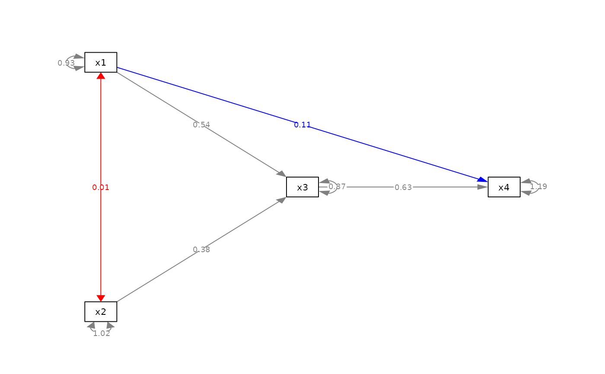
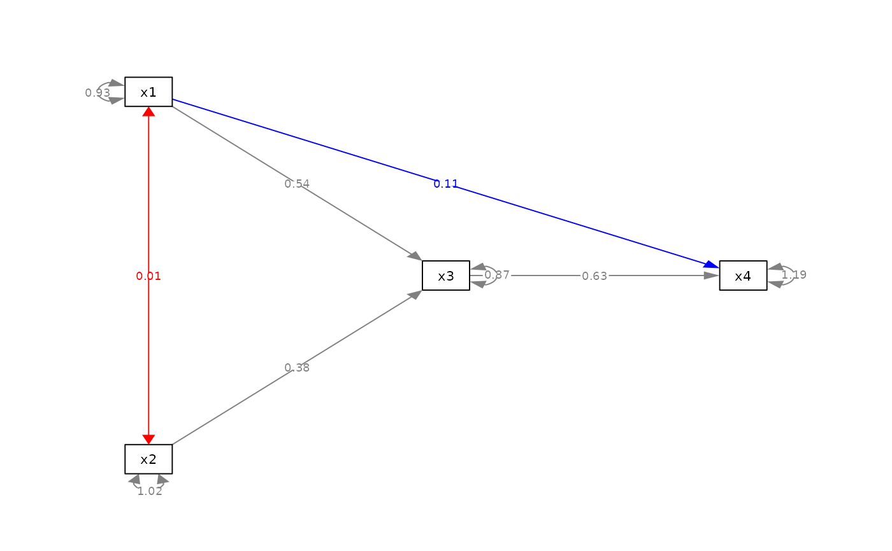

Set arbitrary attributes of selected edges.
Arguments
- semPaths_plot
A qgraph::qgraph object generated by semPlot::semPaths, or a similar qgraph object modified by other semptools functions.
- values
A named vector or a list of named list. See the Details section on how to set this argument.
- attribute_name
The name of the attribute to be changed.
Value
A qgraph::qgraph based on the original one, with the selected attributes of selected edges changed.
Details
Modify a qgraph::qgraph object generated by semPlot::semPaths and change the selected attributes of selected edges.
This function is designed to be a general one that changes the attributes named by the user. The user needs to make sure that the attribute actually exists, and the values are valid for the named attribute.
Setting the value of values
This argument can be set in two ways.
For a named vector, the name of an
element should be the path as
specified by lavaan::model.syntax
or as appeared in
lavaan::parameterEstimates().
For example, if the attributes to be
changed are the colors of selected
edges, to change the color of the
path regressing y on x, the name
should be "y ~ x". To change the
color of the covariance between x1
and x2, the name should be "x1 ~~ x2". Therefore, c("y ~ x1" = "red", "x1 ~~ x2" = "blue") changes the
colors of the path from x1 to y
and the covariance between x1 and
x2 to "red" and "blue",
respectively.
The order of the two nodes may matter for covariances. Therefore, if the attribute of a covariance is not changed, try switching the order of the two nodes.
For a list of named lists, each named
list should have three named values:
from, to, and new_value. The
attribute of the edge from from to
to will be set to new_value.
The second approach is no longer recommended, though kept for backward compatibility.
Examples
mod_pa <-
'x1 ~~ x2
x3 ~ x1 + x2
x4 ~ x1 + x3
'
fit_pa <- lavaan::sem(mod_pa, pa_example)
lavaan::parameterEstimates(fit_pa)[, c("lhs", "op", "rhs", "est", "pvalue")]
#> lhs op rhs est pvalue
#> 1 x1 ~~ x2 0.005 0.957
#> 2 x3 ~ x1 0.537 0.000
#> 3 x3 ~ x2 0.376 0.000
#> 4 x4 ~ x1 0.111 0.382
#> 5 x4 ~ x3 0.629 0.000
#> 6 x3 ~~ x3 0.874 0.000
#> 7 x4 ~~ x4 1.194 0.000
#> 8 x1 ~~ x1 0.933 0.000
#> 9 x2 ~~ x2 1.017 0.000
m <- matrix(c("x1", NA, NA,
NA, "x3", "x4",
"x2", NA, NA), byrow = TRUE, 3, 3)
p_pa <- semPlot::semPaths(fit_pa, whatLabels="est",
style = "ram",
nCharNodes = 0, nCharEdges = 0,
layout = m)
 my_values_vector <- c("x2 ~~ x1" = "red",
"x4 ~ x1" = "blue")
p_pa2v <- set_edge_attribute(p_pa,
values = my_values_vector,
attribute_name = "color")
plot(p_pa2v)

my_values_list <- list(list(from = "x1", to = "x2", new_value = "red"),
list(from = "x1", to = "x4", new_value = "blue"))
p_pa2l <- set_edge_attribute(p_pa,
values = my_values_list,
attribute_name = "color")
plot(p_pa2l)
my_values_vector <- c("x2 ~~ x1" = "red",
"x4 ~ x1" = "blue")
p_pa2v <- set_edge_attribute(p_pa,
values = my_values_vector,
attribute_name = "color")
plot(p_pa2v)

my_values_list <- list(list(from = "x1", to = "x2", new_value = "red"),
list(from = "x1", to = "x4", new_value = "blue"))
p_pa2l <- set_edge_attribute(p_pa,
values = my_values_list,
attribute_name = "color")
plot(p_pa2l)